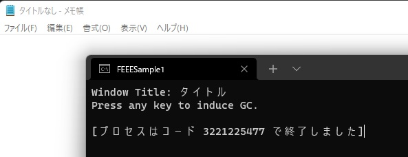

こんにちは、Japan Developer Support Core チームの松井です。今回は、マネージド ヒープが破損している状況下でガベージ コレクション (GC) が実行された場合に発生する .NET ランタイムの内部エラーについてご案内します。
マネージド ヒープは .NET ランタイムがオブジェクトの割り当てに使用するための仮想メモリ上のセグメントとそのデータ構造ですが、アプリケーションの不具合によりマネージド ヒープが破損する場合があります。マネージド ヒープの破損はランタイムの動作では回復できない問題です。そのため .NET ランタイムは処理が継続できなくなり、ランタイムの内部エラーや致命的な実行エンジン エラーを報告してプロセスの実行を終了させます。マネージド ヒープの破損は、ランタイムの内部エラーでお問い合わせをいただきアプリケーションをデバッグする中で見つかる原因として最も一般的なものです。本記事でご案内する内容は .NET ランタイムの内部エラーを引き起こす一例ですが、問題のあるコーディングの回避や検出、トラブルシュート時の参考になれば幸いです。
1. サンプル コード
今回の説明で使用するサンプル コードは以下のとおりです。このサンプル プログラムでは Win32 API をプラットフォーム相互運用で呼び出し、メモ帳 (notepad.exe) のウィンドウ タイトルを取得してコンソールに出力していますが、結果の文字列を格納するバッファーのサイズが小さすぎるためバッファー オーバーランによりマネージド ヒープの破損を引き起こします。
1 | using System; |
2. プログラムの実行結果
あらかじめメモ帳を起動した後にサンプル プログラムを実行していずれかのキーを押下すると、下図のように最後まで実行されず途中で終了コード 3221225477 (0xC0000005) で異常終了します。ソースコードから明らかなようにバッファー オーバーランは Console.ReadKey() の呼び出しより前に起こっていますが、実際に問題として顕在化するのはキーが入力されて GC.Collect() が実行されるタイミングになります。このように問題の原因となる処理と実際に問題が起こる処理が離れていることが、マネージド ヒープの破損が発生する場合の再現方法の確立とその原因調査を非常に困難なものにしています。
終了コードはアクセス違反を示すステータス コード STATUS_ACCESS_VIOLATION となっています。

また、アプリケーションの異常終了とともに Application のイベント ログに以下のようなログが記録されます。
CLR 2 系 (.NET Framework 3.5 SP1 以前) の場合
.NET Runtime - イベント ID 1023
.NET Runtime version 2.0.50727.9157 - 致命的な実行エンジン エラーが発生しました (00007FF97FEF6D4E) (80131506)
Application Error - イベント ID 1000
障害が発生しているアプリケーション名: FEEESample1.exe、バージョン: 1.0.0.0、タイム スタンプ: 0xc496db92
障害が発生しているモジュール名: mscorwks.dll、バージョン: 2.0.50727.9157、タイム スタンプ: 0x6090c9d2
例外コード: 0xc0000005
障害オフセット: 0x0000000000722f1b
障害が発生しているプロセス ID: 0x%9
障害が発生しているアプリケーションの開始時刻: 0x%10
障害が発生しているアプリケーション パス: %11
障害が発生しているモジュール パス: %12
CLR 4 系 (.NET Framework 4 以降) の場合
.NET Runtime - イベント ID 1023
アプリケーション:FEEESample1.exe
フレームワークのバージョン:v4.0.30319
説明: .NET ランタイムの内部エラーのため、プロセスが中止されました IP 00007FFA749F12D2 (00007FFA74810000)、終了コード 80131506。
Application Error - イベント ID 1000
障害が発生しているアプリケーション名: FEEESample1.exe、バージョン: 1.0.0.0、タイム スタンプ: 0xeb1a9e5b
障害が発生しているモジュール名: clr.dll、バージョン: 4.8.4420.0、タイム スタンプ: 0x6109cbc8
例外コード: 0xc0000005
障害オフセット: 0x00000000001e12d2
障害が発生しているプロセス ID: 0x87c8
障害が発生しているアプリケーションの開始時刻: 0x01d80f9642163866
障害が発生しているアプリケーション パス: C:\Users\johndoe\source\repos\FEEESample1\bin\Release\FEEESample1.exe
障害が発生しているモジュール パス: C:\Windows\Microsoft.NET\Framework64\v4.0.30319\clr.dll
.NET Core / .NET の場合
.NET Runtime - イベント ID 1023
Application: FEEESample2.exe
CoreCLR Version: 6.0.121.56705
.NET Version: 6.0.1
Description: The process was terminated due to an internal error in the .NET Runtime at IP 00007FF97E39B555 (00007FF97E300000) with exit code 80131506.
Application Error - イベント ID 1000
障害が発生しているアプリケーション名: FEEESample2.exe、バージョン: 1.0.0.0、タイム スタンプ: 0x61954b73
障害が発生しているモジュール名: coreclr.dll、バージョン: 6.0.121.56705、タイム スタンプ: 0x619543a3
例外コード: 0xc0000005
障害オフセット: 0x000000000009b555
障害が発生しているプロセス ID: 0x9db4
障害が発生しているアプリケーションの開始時刻: 0x01d80f97d9b0137b
障害が発生しているアプリケーション パス: C:\Users\johndoe\source\repos\FEEESample2\bin\Debug\net6.0\FEEESample2.exe
障害が発生しているモジュール パス: C:\Program Files\dotnet\shared\Microsoft.NETCore.App\6.0.1\coreclr.dll
3. デバッグ
イベント ログに Application Error の ID 1000 が記録される場合、まずは Windows Error Reporing の機能 や ProcDump ツール などを使用してダンプ ファイルを取得します。.NET Framework 3.5 以前の場合はランタイム内部で例外をハンドルしてログのみが記録されてしまい、Windows Error Reporting の仕組みでダンプ ファイルを記録できないため注意してください。
以下では、Visual Studio 2022 で C# のコンソール アプリの .NET 6 プロジェクトを作成し、1. のサンプル コード をビルドしたアプリケーションを使用しています。コマンド プロンプトから以下の 2 つのコマンドでアプリケーションを実行し、異常終了させて Windows Error Reporting の機能でダンプ ファイルを取得しています。ここでは弊社へのお問い合わせでよく見られるコールスタックにあわせてサーバー GC を使用していますが、.NET 6 では 環境変数 で簡単に GC の構成を変更できますので、興味がある方は是非ワークステーション GC でも試して例外が発生するスレッドやコールスタックの様子を見比べてみてください。
set DOTNET_gcServer=1
FEEESample1.exe
WinDbg Preview でダンプ ファイルを開いてコールスタックを確認すると、GC スレッド上でアクセス違反例外が発生していることが確認できます。
0:008> .lastevent
Last event: a508.78bc: Access violation - code c0000005 (first/second chance not available)
debugger time: Mon Jan 24 12:22:13.868 2022 (UTC + 9:00)
0:010> .ecxr
...
0:008> k
# Child-SP RetAddr Call Site
00 (Inline Function) --------`-------- coreclr!SVR::my_get_size+0x7 [D:\a\_work\1\s\src\coreclr\gc\gc.cpp @ 10683]
01 000000ca`cd5fd790 00007ff9`afb0df92 coreclr!SVR::gc_heap::mark_object_simple+0x5f [D:\a\_work\1\s\src\coreclr\gc\gc.cpp @ 23109]
02 000000ca`cd5fd7f0 00007ff9`afaa61c6 coreclr!SVR::GCHeap::Promote+0xa2 [D:\a\_work\1\s\src\coreclr\gc\gc.cpp @ 43254]
03 000000ca`cd5fd860 00007ff9`afb45942 coreclr!GcEnumObject+0x76 [D:\a\_work\1\s\src\coreclr\vm\gcenv.ee.common.cpp @ 169]
04 (Inline Function) --------`-------- coreclr!GcInfoDecoder::ReportStackSlotToGC+0x3c [D:\a\_work\1\s\src\coreclr\vm\gcinfodecoder.cpp @ 1869]
05 (Inline Function) --------`-------- coreclr!GcInfoDecoder::ReportSlotToGC+0x5d [D:\a\_work\1\s\src\coreclr\inc\gcinfodecoder.h @ 688]
06 (Inline Function) --------`-------- coreclr!GcInfoDecoder::ReportUntrackedSlots+0x71 [D:\a\_work\1\s\src\coreclr\vm\gcinfodecoder.cpp @ 1018]
07 000000ca`cd5fd890 00007ff9`afb449a9 coreclr!GcInfoDecoder::EnumerateLiveSlots+0x792 [D:\a\_work\1\s\src\coreclr\vm\gcinfodecoder.cpp @ 967]
08 000000ca`cd5fdce0 00007ff9`afa8bcaf coreclr!EECodeManager::EnumGcRefs+0xe9 [D:\a\_work\1\s\src\coreclr\vm\eetwain.cpp @ 5290]
09 000000ca`cd5fde70 00007ff9`afa9a11a coreclr!GcStackCrawlCallBack+0x12f [D:\a\_work\1\s\src\coreclr\vm\gcenv.ee.common.cpp @ 310]
0a (Inline Function) --------`-------- coreclr!Thread::MakeStackwalkerCallback+0x53 [D:\a\_work\1\s\src\coreclr\vm\stackwalk.cpp @ 831]
0b 000000ca`cd5fdf90 00007ff9`afaf52ee coreclr!Thread::StackWalkFramesEx+0xee [D:\a\_work\1\s\src\coreclr\vm\stackwalk.cpp @ 911]
0c 000000ca`cd5fe370 00007ff9`afaf5206 coreclr!Thread::StackWalkFrames+0xae [D:\a\_work\1\s\src\coreclr\vm\stackwalk.cpp @ 995]
0d 000000ca`cd5ff480 00007ff9`afaf50d3 coreclr!ScanStackRoots+0x7a [D:\a\_work\1\s\src\coreclr\vm\gcenv.ee.cpp @ 172]
0e 000000ca`cd5ff4f0 00007ff9`afaf6094 coreclr!GCToEEInterface::GcScanRoots+0x9f [D:\a\_work\1\s\src\coreclr\vm\gcenv.ee.cpp @ 269]
0f (Inline Function) --------`-------- coreclr!GCScan::GcScanRoots+0x14 [D:\a\_work\1\s\src\coreclr\gc\gcscan.cpp @ 152]
10 000000ca`cd5ff530 00007ff9`afaf196a coreclr!SVR::gc_heap::mark_phase+0x3d4 [D:\a\_work\1\s\src\coreclr\gc\gc.cpp @ 24718]
11 000000ca`cd5ff5f0 00007ff9`afaf30cc coreclr!SVR::gc_heap::gc1+0xb6 [D:\a\_work\1\s\src\coreclr\gc\gc.cpp @ 20090]
12 000000ca`cd5ff660 00007ff9`afaf2bb6 coreclr!SVR::gc_heap::garbage_collect+0xec [D:\a\_work\1\s\src\coreclr\gc\gc.cpp @ 21774]
13 000000ca`cd5ff6c0 00007ff9`afaf2b50 coreclr!SVR::gc_heap::gc_thread_function+0x62 [D:\a\_work\1\s\src\coreclr\gc\gc.cpp @ 6703]
14 000000ca`cd5ff6f0 00007ff9`afbb63b4 coreclr!SVR::gc_heap::gc_thread_stub+0xb0 [D:\a\_work\1\s\src\coreclr\gc\gc.cpp @ 31973]
15 (Inline Function) --------`-------- coreclr!`anonymous-namespace'::CreateNonSuspendableThread::__l2::<lambda_cc6f655decef618c652cb4c8a0a63fd5>::operator()+0x65 [D:\a\_work\1\s\src\coreclr\vm\gcenv.ee.cpp @ 1470]
16 000000ca`cd5ff940 00007ffa`8f6954e0 coreclr!<lambda_cc6f655decef618c652cb4c8a0a63fd5>::<lambda_invoker_cdecl>+0x74 [D:\a\_work\1\s\src\coreclr\vm\gcenv.ee.cpp @ 1472]
17 000000ca`cd5ff970 00007ffa`9068485b kernel32!BaseThreadInitThunk+0x10
18 000000ca`cd5ff9a0 00000000`00000000 ntdll!RtlUserThreadStart+0x2b
今回のダンプ ファイルは .NET 6 アプリケーションで取得しているため GitHub からランタイムのソースコードを確認することができます。.NET Framework アプリケーションをデバッグする場合は残念ながらソースコードはお客様が確認することはできません。フレーム 0 やフレーム 1 のソースコードを確認するために、まず coreclr.dll のリソース情報に含まれるコミット ID を確認します。
0:008> lmvmcoreclr
Browse full module list
start end module name
00007ff9`afa50000 00007ff9`aff4c000 coreclr (private pdb symbols) C:\ProgramData\Dbg\sym\coreclr.pdb\FCE8DD479F8D42EDB1E92DD6E95C89481\coreclr.pdb
Loaded symbol image file: coreclr.dll
Image path: C:\Program Files\dotnet\shared\Microsoft.NETCore.App\6.0.1\coreclr.dll
Image name: coreclr.dll
Browse all global symbols functions data
Timestamp: Thu Nov 18 03:02:11 2021 (619543A3)
CheckSum: 004E569F
ImageSize: 004FC000
File version: 6.0.121.56705
Product version: 6.0.121.56705
File flags: 0 (Mask 3F)
File OS: 4 Unknown Win32
File type: 0.0 Unknown
File date: 00000000.00000000
Translations: 0409.04b0
Information from resource tables:
CompanyName: Microsoft Corporation
ProductName: Microsoft® .NET
InternalName: CoreCLR.dll
OriginalFilename: CoreCLR.dll
ProductVersion: 6,0,121,56705 @Commit: 3a25a7f1cc446b60678ed25c9d829420d6321eba
FileVersion: 6,0,121,56705 @Commit: 3a25a7f1cc446b60678ed25c9d829420d6321eba
FileDescription: Microsoft .NET Runtime
LegalCopyright: © Microsoft Corporation. All rights reserved.
Comments: Flavor=Retail
コミット ID が確認できたら GitHub リポジトリの URL にコミット ID を追加してソースファイルを開きます。
.open https://raw.githubusercontent.com/dotnet/runtime/3a25a7f1cc446b60678ed25c9d829420d6321eba/src/coreclr/gc/gc.cpp
このコードについて簡単に説明すると、mark_object_simple 関数は GC の過程でマネージド ヒープ中のオブジェクトを走査して参照されているオブジェクトをマークする処理になります。このとき次のオブジェクトのアドレスを得るためにオブジェクトのサイズを算出する必要があるため、my_get_size 関数ではオブジェクトの型情報が含まれているメソッド テーブルを参照してその結果を返します。
1 | inline size_t my_get_size (Object* ob) |
my_get_size 関数及びその先で発生するアクセス違反は、マネージド ヒープ破損が引き起こす事象としてみられる一般的なものです。マネージド ヒープ破損が起きると .NET ランタイムはオブジェクトの位置を正しく算出できなくなるため、不正なアドレスを参照してしまいこのような状況に至ります。
SOS デバッガー拡張に含まれる VerifyHeap コマンドでマネージド ヒープの状態を検証すると、オブジェクト 00000203289EB2A0 のメソッド テーブルが照会できなかったことと、最後の正常なオブジェクトが 00000203289EB280 であったことが報告されます。
0:008> .loadby sos.dll coreclr
0:008> !VerifyHeap
Could not request method table data for object 00000203289EB2A0 (MethodTable: 5E3330E230E10020).
Last good object: 00000203289EB280.
実際に DumpObj コマンドでオブジェクト 00000203289EB2A0 の情報の表示を試みるとエラーになります。
0:008> !DumpObj 00000203289EB2A0
<Note: this object has an invalid CLASS field>
Invalid object
正常なオブジェクト 00000203289EB280 は以下のようにその内容が確認できます。
0:008> !DumpObj 00000203289EB280
Name: System.Byte[]
MethodTable: 00007ff9500d3870
EEClass: 00007ff9500d37f0
Tracked Type: false
Size: 32(0x20) bytes
Array: Rank 1, Number of elements 8, Type Byte (Print Array)
Content: .0.0.0.0
Fields:
None
正常なオブジェクトの状態をバイナリ表示すると以下のようになっています。
0:008> dq 00000203289EB280
00000203`289eb280 00007ff9`500d3870 00000000`00000008
00000203`289eb290 30eb30c8`30a430bf 002d0020`3057306a
00000203`289eb2a0 5e3330e2`30e10021 00000000`00000000
00000203`289eb2b0 cdcdcdcd`cdcdcdcd 00000000`00000000
00000203`289eb2c0 00007ff9`500d60e9 00000000`00000000
00000203`289eb2d0 00000000`00000000 00000000`00000000
00000203`289eb2e0 00000000`00000000 00000000`00000000
00000203`289eb2f0 00007ff9`500d39d8 00000000`00000000
.NET で配列型オブジェクトのデータ構造は以下のようになっており、先頭からのオフセット 0x8 が配列のサイズ、オフセット 0x10 が配列に実際に格納されるデータの先頭となります。
0:008> dt coreclr!CORINFO_Array
+0x000 methTable : Ptr64 Ptr64 Void
+0x008 length : Uint4B
+0x00c alignpad : Uint4B
+0x010 i1Elems : [1] Char
+0x010 u1Elems : [1] UChar
+0x010 i2Elems : [1] Int2B
+0x010 u2Elems : [1] Uint2B
+0x010 i4Elems : [1] Int4B
+0x010 u4Elems : [1] Uint4B
+0x010 r4Elems : [1] Float
配列の先頭を du コマンドで Unicode 文字列として表示するとウィンドウ タイトルが格納されていること、および文字列の長さが配列要素の数より大きいことが分かり、オーバーランが発生していることが確認できます。
0:008> du 00000203289EB280+0x10
00000203`289eb290 "タイトルなし -!メモ帳"
この時点で、メソッド テーブルが照会できなかったオブジェクト 00000203289EB2A0 は、直前のオブジェクト 00000203289EB280 に格納された文字列のバッファー オーバーランにより破損させられたことが確認できます。
残念ながら現実のアプリケーションで起きるトラブルはこのようなシンプルなものではなく、完全にランダムに見える値や NULL などで上書きされており、マネージド ヒープを破損させたデータを特定できないことが多いです。その場合、破損したオブジェクトのアドレスを参照する親のクラスや構造体を探したり、破損した値のパターンに特徴が見られる場合はお客様に心当たりがないか確認をお願いする場合があります。
4. エラーの再現性を高める方法
前述のサンプル コードではコード中に GC.Collect() メソッドを追加していたため、確実に事象を再現することができます。しかし、現実のアプリケーションでは GC が発生するタイミングは不定です。マネージド ヒープの破損が発生したとしてもその時点では問題なくアプリケーションは動作し、マネージド ヒープの使用が閾値を超えて GC がトリガーされたときに初めてエラーが顕在化します。その他にも、世代 2 のヒープが破損していた場合はフル GC がトリガーされるまで問題が顕在化しない、サーバー GC が使用されている場合は複数のマネージド ヒープに分かれているため破損したヒープで GC が実行されるまで問題が顕在化しないなど、エラーの再現が難しくなる様々な要因があります。
マネージド ヒープの破損の原因として一般的なものは以下が挙げられます。
- プラットフォーム相互運用や COM 相互運用における引数や戻り値の誤り
- プラットフォーム相互運用や COM 相互運用で利用する構造体定義の誤り
- プラットフォーム相互運用や COM 相互運用で呼び出されたアンマネージ コードの不具合
- Unsafe コンテキスト内で行われている処理の不具合
したがって、これらの処理の前後で GC を実行させることができれば再現性を高められる可能性があります。疑いがある個所に GC.Collect() を追加してみることも有効ですが、.NET ではこれを実現する仕組みとして GC Stress と Managed Debugging Assistants (MDA) の 2 種類の方法がありますので紹介します。
なお、GC Stress や MDA を使用しても再現ができない状況として考えられる主な要因としては、アプリケーションに入力される特定のデータや値などに起因して問題が起きている場合や、複数のスレッドから特定の順序で処理が実行された場合に問題が起きている場合が挙げられます。例えばバッファー オーバーランは想定外の長さのデータを入力した場合に起こる事が多く、GC Stress や MDA を使用してもそのようなデータが入力されない限り問題を再現させることはできません。また、GC Stress や MDA はアプリケーションの実行速度に大きな影響を与えるため、特定のシビアな実行タイミングで発生するような問題は再現が返って難しくなる場合があります。これらの特性を理解して活用してください。
GC Stress と HeapVeirfy
GC Stress は、GC が実行される通常のタイミングに加えて、他の様々なタイミングで GC を実行して GC の頻度を上げることで、マネージド ヒープの破損により発生する事象の再現性を高める .NET ランタイムの機能です。GC Stress で GC を実行するタイミングはマネージ オブジェクトの割り当て時や JIT コンパイルの過程など複数用意されており、ビット フラグの組み合わせでレジストリや環境変数の設定により有効化することが可能です。
HeapVerify は、GC の実行時にヒープの検証を実施する .NET ランタイムの機能です。こちらも、検証するタイミングやその内容が複数用意されており、ビット フラグの組み合わせで指定します。
GC Stress や HeapVerify を設定した場合、一般的にアプリケーションのパフォーマンスは大きく低下します。指定するフラグを組み合わせることである程度負荷を軽減することは可能ですが、その半面問題の再現につながらなくなる可能性もあるため注意が必要です。GC Stress と HeapVerify を運用環境で使用することは一般的に難しいため、実際のアプリケーションで動作への影響を確認するとともに、QA 環境やテスト環境で有効化して問題が再現できるか検証することをお勧めします。弊社がお客様によくご案内する設定の組み合わせは GCSTRESS_ALLOC | GCSTRESS_TRANSITION と HEAPVERIFY_GC で、環境変数やレジストリを通じて以下のように設定できます。
環境変数の設定例
set COMPlus_GCStress=3
set COMPlus_HeapVerify=1
レジストリの設定例
[HKEY_LOCAL_MACHINE\SOFTWARE\Microsoft\.NETFramework\]
"GCStress"=dword:00000003
"HeapVerify"=dword:00000001
GC Stress や HeapVerify で指定できる他の組み合わせは以下のソースコードから確認できます。
https://github.com/dotnet/runtime/blob/main/src/coreclr/vm/eeconfig.h
1 | enum GCStressFlags { |
以下は、サンプル コードから GC.Collect() の呼び出しを削除し、GC Stress を有効化した状態で事象を再現したときのコールスタックです。GC スレッドのアクセス違反が再現できていることと、メイン スレッドで JIT コンパイル時 (MethodDesk::DoPreStub 関数) に GCStress によって GC がトリガーされたことが確認できます。
0:006> r
Last set context:
rax=0000000000000020 rbx=0000021357ef1840 rcx=004e0020002d0020
rdx=00000213599814d8 rsi=0000000000400001 rdi=0000021359981458
rip=00007ff8a2396cd4 rsp=00000093d8f7f8d0 rbp=00000093d8f7f969
r8=0000000000000000 r9=00007ff842713780 r10=004e0020002d0020
r11=0000000000400001 r12=0000000000000002 r13=0000000000000000
r14=0000021359980000 r15=00007ff8a2525600
iopl=0 nv up ei pl nz na pe nc
cs=0033 ss=002b ds=002b es=002b fs=0053 gs=002b efl=00010202
coreclr!SVR::my_get_size+0xa [inlined in coreclr!SVR::gc_heap::verify_heap+0x1b8]:
00007ff8`a2396cd4 443901 cmp dword ptr [rcx],r8d ds:004e0020`002d0020=????????
0:006> k
# Child-SP RetAddr Call Site
00 (Inline Function) --------`-------- coreclr!SVR::my_get_size+0xa [D:\a\_work\1\s\src\coreclr\gc\gc.cpp @ 10683]
01 00000093`d8f7f8d0 00007ff8`a22377bf coreclr!SVR::gc_heap::verify_heap+0x1b8 [D:\a\_work\1\s\src\coreclr\gc\gc.cpp @ 42064]
02 00000093`d8f7f9d0 00007ff8`a2122bb6 coreclr!SVR::gc_heap::garbage_collect+0x1147df [D:\a\_work\1\s\src\coreclr\gc\gc.cpp @ 21589]
03 00000093`d8f7fa30 00007ff8`a2122b50 coreclr!SVR::gc_heap::gc_thread_function+0x62 [D:\a\_work\1\s\src\coreclr\gc\gc.cpp @ 6703]
04 00000093`d8f7fa60 00007ff8`a21e63b4 coreclr!SVR::gc_heap::gc_thread_stub+0xb0 [D:\a\_work\1\s\src\coreclr\gc\gc.cpp @ 31973]
05 (Inline Function) --------`-------- coreclr!`anonymous-namespace'::CreateNonSuspendableThread::__l2::<lambda_cc6f655decef618c652cb4c8a0a63fd5>::operator()+0x65 [D:\a\_work\1\s\src\coreclr\vm\gcenv.ee.cpp @ 1470]
06 00000093`d8f7fab0 00007ff9`3a3b7034 coreclr!<lambda_cc6f655decef618c652cb4c8a0a63fd5>::<lambda_invoker_cdecl>+0x74 [D:\a\_work\1\s\src\coreclr\vm\gcenv.ee.cpp @ 1472]
07 00000093`d8f7fae0 00007ff9`3aba2651 kernel32!BaseThreadInitThunk+0x14
08 00000093`d8f7fb10 00000000`00000000 ntdll!RtlUserThreadStart+0x21
0:006> ~0k
# Child-SP RetAddr Call Site
00 00000093`d877e0b8 00007ff9`38631a8e ntdll!NtWaitForSingleObject+0x14
01 00000093`d877e0c0 00007ff8`a212a1c0 KERNELBASE!WaitForSingleObjectEx+0x8e
02 (Inline Function) --------`-------- coreclr!CLREventWaitHelper2+0x6 [D:\a\_work\1\s\src\coreclr\vm\synch.cpp @ 372]
03 00000093`d877e160 00007ff8`a21cb585 coreclr!CLREventWaitHelper+0x20 [D:\a\_work\1\s\src\coreclr\vm\synch.cpp @ 397]
04 (Inline Function) --------`-------- coreclr!CLREventBase::WaitEx+0x36 [D:\a\_work\1\s\src\coreclr\vm\synch.cpp @ 466]
05 (Inline Function) --------`-------- coreclr!CLREventBase::Wait+0x36 [D:\a\_work\1\s\src\coreclr\vm\synch.cpp @ 412]
06 (Inline Function) --------`-------- coreclr!GCEvent::Impl::Wait+0x36 [D:\a\_work\1\s\src\coreclr\vm\gcenv.os.cpp @ 1283]
07 (Inline Function) --------`-------- coreclr!GCEvent::Wait+0x36 [D:\a\_work\1\s\src\coreclr\vm\gcenv.os.cpp @ 1361]
08 00000093`d877e1c0 00007ff8`a2122eb8 coreclr!SVR::gc_heap::wait_for_gc_done+0x6d [D:\a\_work\1\s\src\coreclr\gc\gc.cpp @ 13069]
09 00000093`d877e1f0 00007ff8`a238c88a coreclr!SVR::GCHeap::GarbageCollectGeneration+0xf0 [D:\a\_work\1\s\src\coreclr\gc\gc.cpp @ 44692]
0a 00000093`d877e240 00007ff8`a2211733 coreclr!SVR::GCHeap::StressHeap+0x8a [D:\a\_work\1\s\src\coreclr\gc\gc.cpp @ 43497]
0b (Inline Function) --------`-------- coreclr!_GCStress::StressGcTriggerPolicy::Trigger+0x1e [D:\a\_work\1\s\src\coreclr\vm\gcstress.h @ 292]
0c (Inline Function) --------`-------- coreclr!_GCStress::GCSBase<0,_GCStress::EeconfigFastGcSPolicy,_GCStress::CoopGcModePolicy,mpl::null_type>::MaybeTrigger+0x16d51b [D:\a\_work\1\s\src\coreclr\vm\gcstress.h @ 399]
0d 00000093`d877e280 00007ff8`a20a400b coreclr!MethodDesc::DoPrestub+0x16d5f3 [D:\a\_work\1\s\src\coreclr\vm\prestub.cpp @ 2175]
0e 00000093`d877e3a0 00007ff8`a21db5a5 coreclr!PreStubWorker+0x21b [D:\a\_work\1\s\src\coreclr\vm\prestub.cpp @ 2039]
0f 00000093`d877e530 00007ff8`42642d33 coreclr!ThePreStub+0x55
10 00000093`d877e5e0 00007ff8`a21da573 0x00007ff8`42642d33
11 00000093`d877e670 00007ff8`a20dff16 coreclr!CallDescrWorkerInternal+0x83
12 00000093`d877e6b0 00007ff8`a2151067 coreclr!MethodDescCallSite::CallTargetWorker+0x176 [D:\a\_work\1\s\src\coreclr\vm\callhelpers.cpp @ 551]
13 (Inline Function) --------`-------- coreclr!MethodDescCallSite::Call+0xb [D:\a\_work\1\s\src\coreclr\vm\callhelpers.h @ 458]
14 00000093`d877e7e0 00007ff8`a2150ee6 coreclr!RunMainInternal+0x11f [D:\a\_work\1\s\src\coreclr\vm\assembly.cpp @ 1483]
15 00000093`d877e910 00007ff8`a2150d95 coreclr!RunMain+0xd2 [D:\a\_work\1\s\src\coreclr\vm\assembly.cpp @ 1554]
16 00000093`d877e9c0 00007ff8`a2150b56 coreclr!Assembly::ExecuteMainMethod+0x1c9 [D:\a\_work\1\s\src\coreclr\vm\assembly.cpp @ 1672]
17 00000093`d877ed50 00007ff8`a21852b2 coreclr!CorHost2::ExecuteAssembly+0x1c6 [D:\a\_work\1\s\src\coreclr\vm\corhost.cpp @ 384]
18 00000093`d877eec0 00007ff8`f2f396bb coreclr!coreclr_execute_assembly+0xe2 [D:\a\_work\1\s\src\coreclr\dlls\mscoree\unixinterface.cpp @ 446]
19 (Inline Function) --------`-------- hostpolicy!coreclr_t::execute_assembly+0x2a [D:\a\_work\1\s\src\native\corehost\hostpolicy\coreclr.cpp @ 89]
1a 00000093`d877ef60 00007ff8`f2f399ec hostpolicy!run_app_for_context+0x56b [D:\a\_work\1\s\src\native\corehost\hostpolicy\hostpolicy.cpp @ 255]
1b 00000093`d877f100 00007ff8`f2f3a387 hostpolicy!run_app+0x3c [D:\a\_work\1\s\src\native\corehost\hostpolicy\hostpolicy.cpp @ 284]
1c 00000093`d877f140 00007ff8`f383b539 hostpolicy!corehost_main+0x107 [D:\a\_work\1\s\src\native\corehost\hostpolicy\hostpolicy.cpp @ 430]
1d 00000093`d877f2f0 00007ff8`f383e506 hostfxr!execute_app+0x2e9 [D:\a\_work\1\s\src\native\corehost\fxr\fx_muxer.cpp @ 146]
1e 00000093`d877f3f0 00007ff8`f3840821 hostfxr!`anonymous namespace'::read_config_and_execute+0xa6 [D:\a\_work\1\s\src\native\corehost\fxr\fx_muxer.cpp @ 533]
1f 00000093`d877f4f0 00007ff8`f383eb62 hostfxr!fx_muxer_t::handle_exec_host_command+0x161 [D:\a\_work\1\s\src\native\corehost\fxr\fx_muxer.cpp @ 1018]
20 00000093`d877f5a0 00007ff8`f38382ab hostfxr!fx_muxer_t::execute+0x482 [D:\a\_work\1\s\src\native\corehost\fxr\fx_muxer.cpp @ 579]
21 00000093`d877f6e0 00007ff7`773624b8 hostfxr!hostfxr_main_startupinfo+0xab [D:\a\_work\1\s\src\native\corehost\fxr\hostfxr.cpp @ 61]
22 00000093`d877f7e0 00007ff7`7736282b FEEESample2_exe!exe_start+0x8d8 [D:\a\_work\1\s\src\native\corehost\corehost.cpp @ 235]
23 00000093`d877f9b0 00007ff7`77363cd8 FEEESample2_exe!wmain+0xab [D:\a\_work\1\s\src\native\corehost\corehost.cpp @ 304]
24 (Inline Function) --------`-------- FEEESample2_exe!invoke_main+0x22 [d:\a01\_work\2\s\src\vctools\crt\vcstartup\src\startup\exe_common.inl @ 90]
25 00000093`d877f9e0 00007ff9`3a3b7034 FEEESample2_exe!__scrt_common_main_seh+0x10c [d:\a01\_work\2\s\src\vctools\crt\vcstartup\src\startup\exe_common.inl @ 288]
26 00000093`d877fa20 00007ff9`3aba2651 kernel32!BaseThreadInitThunk+0x14
27 00000093`d877fa50 00000000`00000000 ntdll!RtlUserThreadStart+0x21
Managed Debugging Assistants
Managed Debugging Assistants (MDA) は、.NET Framework のランタイムに実装されているデバッグ支援機能です。MDA には .NET Framework アプリケーションで一般的にみられる問題を検出するための様々な機能があり、マネージド ヒープの破損を検出するための機能も用意されています。前述のようにマネージド ヒープの破損はマネージド コードとアンマネージド コードの連携が行われるケースで起きやすいアプリケーションの不具合ですが、MDA ではマネージド コードとアンマネージド コードの遷移時に GC をトリガーする gcManagedToUnmanaged MDA および gcUnmanagedToManaged MDA があり、これらはマネージド ヒープの破損を検出する際に特に有用です。
MDA の具体的な設定方法は ドキュメント で詳細に説明されているためここでは割愛します。
以下は、サンプル コードから GC.Collect() の呼び出しを削除し、MDA で gcUnmanagedToManaged と gcManagedToUnmanaged を有効化した状態で事象を再現したときのコールスタックです。GC スレッドのアクセス違反が再現できていることと、メイン スレッドでプラットフォーム相互運用呼び出し時 (DomainBoundILStubClass.IL_STUB_PInvoke メソッド) に MDA によって GC がトリガーされたことが確認できます。
0:000> r
eax=0074006e ebx=00000000 ecx=00000000 edx=02e024b0 esi=74ee87b0 edi=00000003
eip=748a8dd4 esp=00b9f184 ebp=00b9f1cc iopl=0 nv up ei pl nz na po nc
cs=0023 ss=002b ds=002b es=002b fs=0053 gs=002b efl=00010202
clr!WKS::gc_heap::mark_phase+0x5a:
748a8dd4 3918 cmp dword ptr [eax],ebx ds:002b:0074006e=????????
0:000> k
# ChildEBP RetAddr
00 00b9f1cc 748a81b5 clr!WKS::gc_heap::mark_phase+0x5a
01 00b9f1ec 748a84eb clr!WKS::gc_heap::gc1+0xae
02 00b9f204 748a85f5 clr!WKS::gc_heap::garbage_collect+0x367
03 00b9f224 7495df2d clr!WKS::GCHeap::GarbageCollectGeneration+0x1bd
04 00b9f234 7495dfa4 clr!WKS::GCHeap::GarbageCollectTry+0x71
05 00b9f260 74b612ed clr!WKS::GCHeap::GarbageCollect+0xac
06 00b9f2cc 74b46eb0 clr!TriggerGCForMDAInternal+0x7d
07 00b9f354 01150af7 clr!StubHelpers::TriggerGCForMDA+0x61
WARNING: Frame IP not in any known module. Following frames may be wrong.
08 00b9f398 011508b5 0x1150af7
09 00b9f3c8 747af066 0x11508b5
0a 00b9f3d4 747b230a clr!CallDescrWorkerInternal+0x34
0b 00b9f428 747b85eb clr!CallDescrWorkerWithHandler+0x6b
0c 00b9f498 7495b28b clr!MethodDescCallSite::CallTargetWorker+0x16a
0d 00b9f5bc 7495b96a clr!RunMain+0x1b3
0e 00b9f828 7495b897 clr!Assembly::ExecuteMainMethod+0xf7
0f 00b9fd0c 7495ba18 clr!SystemDomain::ExecuteMainMethod+0x5ef
10 00b9fd64 7495bb3e clr!ExecuteEXE+0x4c
11 00b9fda4 74957445 clr!_CorExeMainInternal+0xdc
12 00b9fde0 74f8fa84 clr!_CorExeMain+0x4d
13 00b9fe18 7501e81e mscoreei!_CorExeMain+0xd6
14 00b9fe28 75024338 mscoree!ShellShim__CorExeMain+0x9e
15 00b9fe30 766cfa29 mscoree!_CorExeMain_Exported+0x8
16 00b9fe40 77217a9e kernel32!BaseThreadInitThunk+0x19
17 00b9fe9c 77217a6e ntdll!__RtlUserThreadStart+0x2f
18 00b9feac 00000000 ntdll!_RtlUserThreadStart+0x1b
0:000> !ClrStack
OS Thread Id: 0x3708 (0)
Child SP IP Call Site
00b9f2e8 748a8dd4 [HelperMethodFrame: 00b9f2e8] System.StubHelpers.StubHelpers.TriggerGCForMDA()
00b9f35c 01150af7 DomainBoundILStubClass.IL_STUB_PInvoke(IntPtr, Byte[], Int32)
00b9f360 011508b5 [InlinedCallFrame: 00b9f360] FEEESample1.Program.GetWindowText(IntPtr, Byte[], Int32)
00b9f3a4 011508b5 FEEESample1.Program.Main(System.String[]) [C:\Users\johndoe\source\repos\FEEESample1\Program.cs @ 27]
00b9f53c 747af066 [GCFrame: 00b9f53c]
なお、残念ながら MDA は .NET Core / .NET には実装されていないため、.NET Framework のみで利用可能です。.NET Core / .NET アプリケーションの場合は GC Stress の利用を検討してください。また、GC Stress と同様に MDA もアプリケーションのパフォーマンスに影響を与えますので注意してください。
5. VerifyHeap コマンドでマネージド ヒープ破損を検出できないケース
VerifyHeap コマンドはマネージド ヒープを走査してヒープとオブジェクトの正常性を検証しますが、破損の状況によっては問題を検出できない場合があります。例えば以下のコードは配列オブジェクトの要素数のみを破損させます。
1 | using System; |
このとき、アプリケーションは GC やファイナライザーの実行などのタイミングで異常終了しますが、VerifyHeap コマンドは破損を検出しません。一方で DumpHeap コマンドや DumpObj コマンドは異常なオブジェクト サイズを報告します。
0:000> !VerifyHeap
No heap corruption detected.
0:000> !DumpHeap -type System.Byte[]
Address MT Size
0000020192bab198 00007ff91acf3760 12345702
Statistics:
MT Count TotalSize Class Name
00007ff91acf3760 1 12345702 System.Byte[]
Total 1 objects
0:000> !DumpObj /d 0000020192bab198
Name: System.Byte[]
MethodTable: 00007ff91acf3760
EEClass: 00007ff91acf36e0
Tracked Type: false
Size: 12345702(0xbc6166) bytes
Array: Rank 1, Number of elements 12345678, Type Byte (Print Array)
Content: .................a..............................................H>..............9i...... ................................s......
Fields:
None
VerifyHeap コマンドはヒープ破損を検出するために有用なデバッガー拡張コマンドですが、すべての破損をできるわけではないため注意してください。
6. まとめ
マネージド ヒープの破損は .NET ランタイムの内部エラーや致命的な実行エンジン エラーの原因として最も一般的に見られるものです。マネージド コードのみを実行するアプリケーションでマネージド ヒープの破損が起こることはほとんどありませんが、アンマネージド コードとの相互運用を行う場合はコーディング ミスなどで容易にマネージド ヒープが破損する可能性があります。コーディング ミスを避けるために、アンマネージド コードとの相互運用において https://github.com/microsoft/win32metadata のような既存のパッケージやプロジェクトが活用できないか検討してみてください。また、テスト工程で問題を検出しやすくするために、.NET ランタイムが提供している GC Stress や HeapVerify、MDA の機能を有効にした状態でのテスト ケースを組み込むことも検討してください。
マネージド ヒープの破損による .NET ランタイムの内部エラーは、再現性に乏しくダンプ ファイルからも調査が非常に難しい事象です。破損している箇所から処理を推測することが出来ない場合は、原因を調査するために何らかの方法で再現性を確保する必要があります。再現性を確保する上で GC Stress や HeapVerify、MDA が役立つ可能性がありますが、いずれも負荷が高くアプリケーションのパフォーマンスに影響がありますので、この点を踏まえて活用してください。
本ブログの内容は弊社の公式見解として保証されるものではなく、開発・運用時の参考情報としてご活用いただくことを目的としています。もし公式な見解が必要な場合は、弊社ドキュメント (https://learn.microsoft.com や https://support.microsoft.com) をご参照いただくか、もしくは私共サポートまでお問い合わせください。